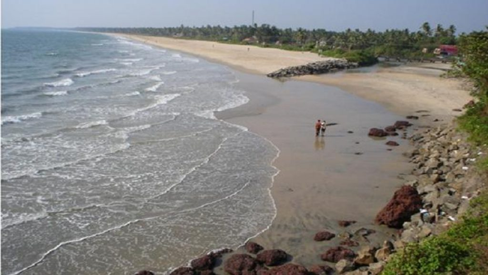

Kannur
(Est. - 1 Jan 1957)
Kannur, formerly Cannanore, is a northern district of Kerala. It shares its boundaries with the Kasaragod District of Kerala on the North and the Kozhikode District of Kerala in The South. To the east is the State of Karnataka and to the West is the Arabian Sea. The district derives its name from the city of Kannur, which is its headquarters. Kannur is famous for its extraordinary natural beauty, its dainty beaches, ancient temples and the associated festival rituals like the Theyyam. The major industries, besides tourism, are the handloom and choir work industries.
These are two unique destinations to visit in Kannur.

Payyabalam beach